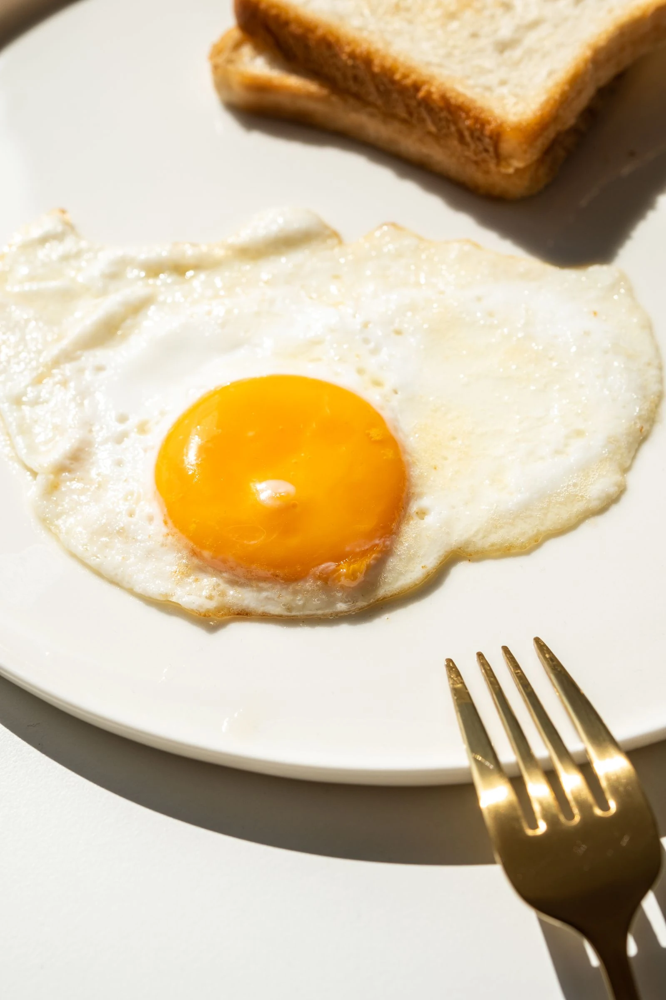
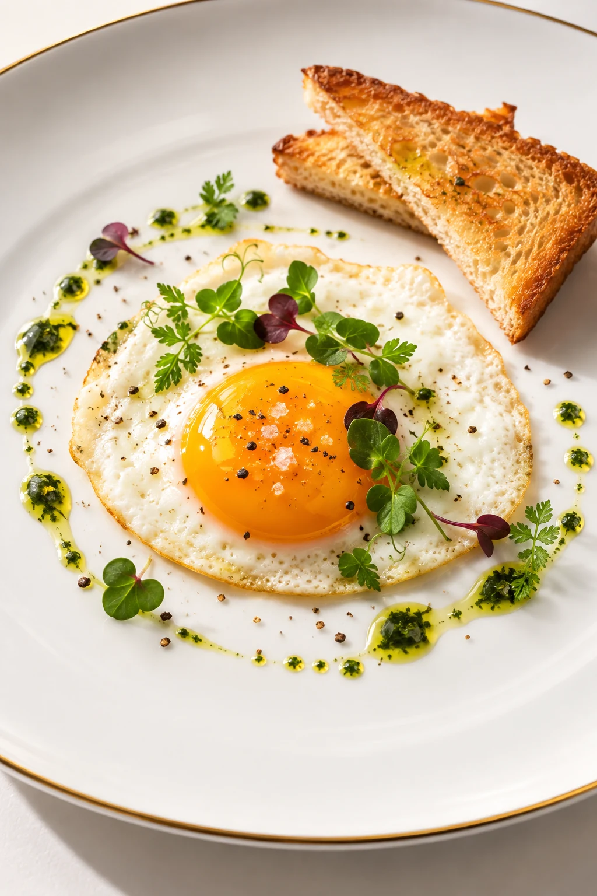
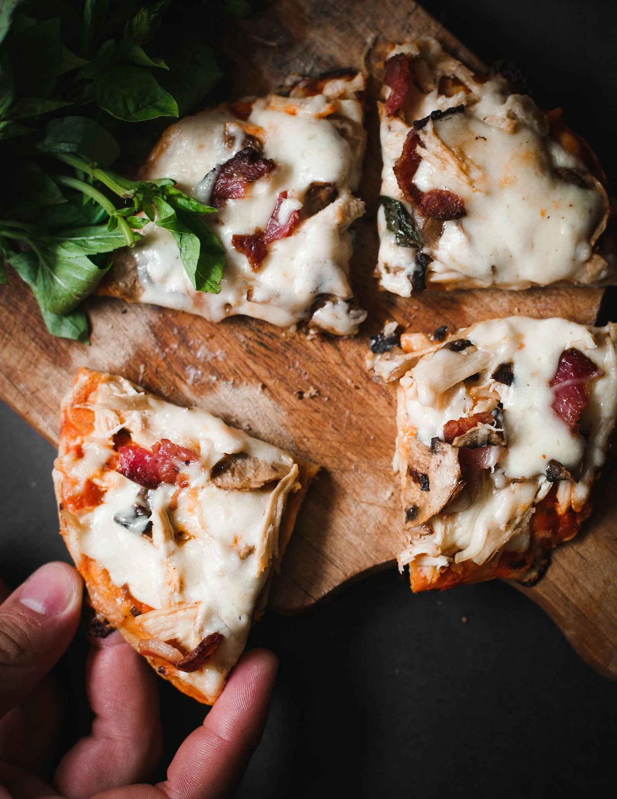
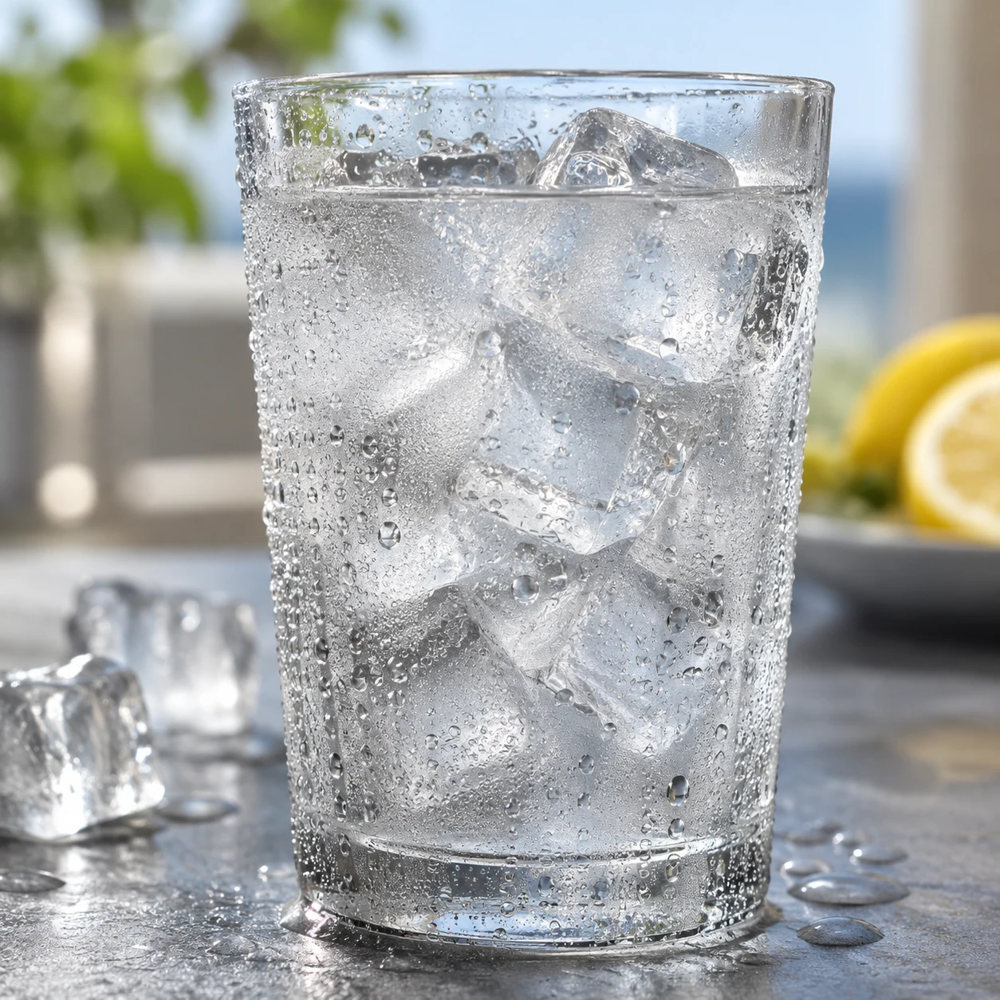
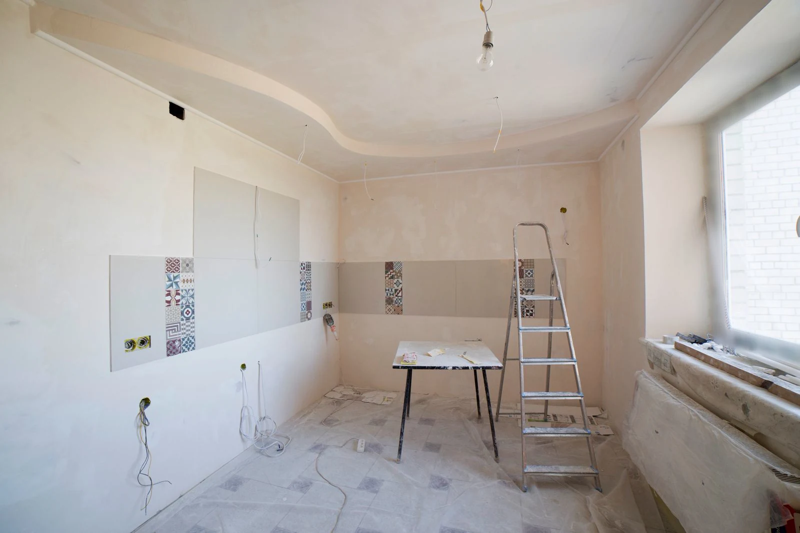
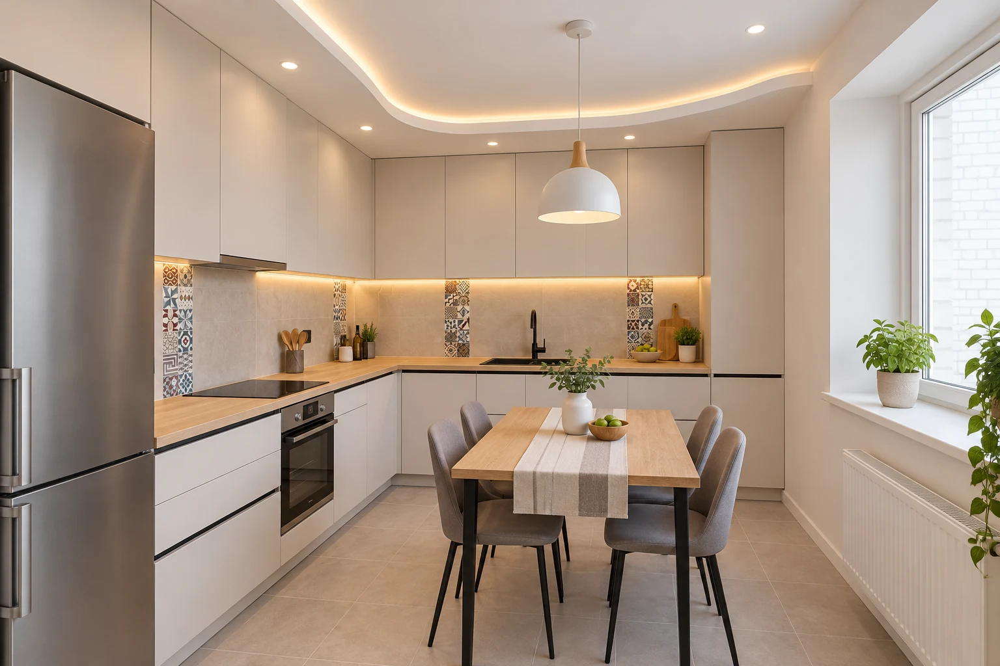

Как пользоваться промптами в ChatGPT
Начни со своего снимка. Сначала прикрепи фото блюда или комнаты, затем вставь строку: ChatGPT изменит загруженное изображение. Работа с фото описана в справке OpenAI
Слово со слэшем, например /platebeauty, служит коротким именем стиля, а не отдельной встроенной командой ChatGPT. Копируй строку целиком вместе с английским описанием. Перевод под ней помогает выбрать нужный эффект
1. Прикрепи своё фото
Открой ChatGPT и новый чат. Нажми кнопку добавления вложения рядом с полем сообщения, выбери фото блюда или комнаты и дождись его миниатюры. Пока не отправляй сообщение: сначала добавь строку из следующего пункта
Результат: в новом сообщении видно прикреплённое фото
2. Вставь строку целиком
Найди подходящий перевод ниже и нажми «Скопировать» на его плашке. Вставь скопированную строку в сообщение с фото и отправь. Дождись готовой картинки. Для другого эффекта снова прикрепи исходное фото, чтобы следующий запрос не менял предыдущий результат
Результат: есть исходник и новая картинка, которые можно сравнить
3. Сравни и сохрани
Открой результат крупно и сравни с исходником. Если потерялись нужные детали, уточни по-русски: «Сохрани состав блюда и тарелку, меняй только подачу». Уточнение может помочь, но точное сохранение деталей нужно проверить. Наши пробы ниже сделаны за одну попытку, без таких уточнений
Когда результат подходит, открой картинку и нажми Save («Сохранить»), чтобы скачать файл. Способы редактирования и сохранения описаны в справке OpenAI
Результат: сохранён файл с нужным эффектом после сравнения с твоим фото
Строки с видами природы и города можно использовать без фото, если нужна придуманная сцена
Пробы было/стало
Наши пробы: фото + строка целиком, одна попытка. Дополнительных уточнений и дорисовки не было
Ресторанная подача из простой глазуньи
/platebeauty - fine dining plating


Исходник: Pexels №16991282, Pexels License. Результат создан генератором изображений
Яйцо и тосты остались, но тарелка, свет и сервировка новые: модель добавила микрозелень, крупную соль, перец и капли зелёного масла по кругу, тосты нарезала треугольниками. Вилки больше нет. Ингредиенты украшения придуманы моделью, их не было на исходнике
Сыр тянется на пицце
/cheesestring - long cheese pull


Исходник: Pexels №2762942, Pexels License. Результат создан генератором изображений
Доска, зелень, начинка и рука с куском остались на месте. Модель добавила длинные нити сыра между кусками. Нитей много, местами они выглядят как паутина: в настоящей пицце сыр тянется от одного куска
Кухня после ремонта
/kitchenview - renovated kitchen


Исходник: Pexels №36035073, Pexels License. Результат создан генератором изображений
Окно справа, изгиб потолка и полоски узорной плитки узнаются, по ним видно, что это та же комната. Мебель, технику, свет и стол модель выбрала сама. Это картинка-идея, а не проект ремонта: размеры шкафов и розеток по ней не проверить
Еда и кухня
24 строки. Читай перевод и копируй запрос с нужным эффектом
/platebeauty - fine dining platingподача блюда как в ресторане
/cheesestring - long cheese pullдлинная тянущаяся нить сыра
/herbgarnish - herbs sprinkled on topпар над только что поданным блюдом
/tablescape - full table overheadнакрытый стол сверху
/stepcook - four cooking stepsчетыре шага приготовления
/bakerycase - inside bakery caseвыпечка за стеклом витрины
/cartfood - street food cartтележка уличной еды
/icedrink - ice and condensationлёд и капли на холодном напитке
/dessertclose - extreme dessert close upдесерт очень крупным планом
/saucedrip - slow glossy sauce dripглянцевая капля соуса
/grillmarks - seared grill marksполоски от гриля
/freshcut - juicy fresh cutсочный свежий разрез
/bakingprocess - shaping dough by handруки формируют тесто
/marketproduce - farmers market stallприлавок фермерского рынка
/winepour - wine frozen mid pourвино застыло в момент наливания
/teasteam - morning tea steamпар над утренним чаем
/spiceclose - colorful spice pilesяркие горки специй
/breaddough - kneading flour dustзамешивание теста в облаке муки
/candymelt - melting chocolate glossглянец тающего шоколада
/fruitsplash - fruit water splashфрукт во всплеске воды
/herbgarnish - herbs sprinkled on topзелень сыплется на блюдо
/platingtop - final garnish overheadфинальное украшение блюда сверху
/kitchenaction - chef cooking activelyповар активно готовит
/mealprep - ingredients laid outингредиенты разложены для готовки
Дом и путешествия
24 строки. Читай перевод и копируй запрос с нужным эффектом
/barecloset - ten piece wardrobeгардероб из десяти вещей
/designrender - interior design renderкартинка будущего интерьера
/newlook - empty room furnishedпустую комнату обставили
/barewalls - room emptied outиз комнаты убрали всё
/furnishedroom - cozy lived in roomуютная обжитая комната
/buildingplan - architectural renderздание как на архитектурном проекте
/frontview - building day and nightздание днём и ночью
/kitchenview - renovated kitchenкухня после ремонта
/balconyview - view from balconyвид с балкона
/rooftopview - rooftop sunset skylineзакатный город с крыши
/poolside - bright poolside sceneяркая сцена у бассейна
/gardenpath - flower lined pathдорожка среди цветов
/citystreet - busy city streetоживлённая городская улица
/countryside - rolling green hillsзелёные холмы
/coastalview - rocky coast wavesскалистый берег с волнами
/mountainview - tall mountain rangeвысокая горная цепь
/desertview - distant sand dunesпесчаные дюны вдали
/forestpath - dappled forest pathлесная дорожка в пятнах света
/lakeside - calm lake mistтихое озеро в тумане
/riverview - flowing river bankберег текущей реки
/vineyardview - rows of vineyardряды виноградника
/farmview - barn and fenceамбар и ограда
/islandview - tropical island sceneтропический остров
/cabinview - snowy warm cabinтёплый домик среди снега
Другие подборки серии
Семь тем, каждая со своими строками. Следующие подборки появятся здесь после публикации
Еда на фото выглядит по-новому. Как превратить это в блог?
Инструкция пройдена. А как сделать, чтобы нейросети приводили клиентов?
Концентрат - онлайн-мероприятие Ивана Сергеева по вайбмаркетингу: 13-15 октября, 19:00 по Москве. Участие бесплатное, регистрация на сайте до 14 октября
ЗарегистрироватьсяРеклама. ИП Сергеев И. С., ИНН 352511695540. erid: 2VtzqviiWtm
Что проверить перед сохранением
Сравни результат со своим исходником крупно. В ресторанной подаче модель добавила микрозелень, соль, перец и зелёное масло, а вилку убрала; на пицце нитей сыра больше, чем бывает в жизни. Если фото пойдёт в меню, проверь каждый ингредиент и размер порции. На кухне сравни окно, потолок и плитку: шкафы, технику и стол модель выбрала сама. Размеры и розетки проверь отдельно, прежде чем заказывать мебель